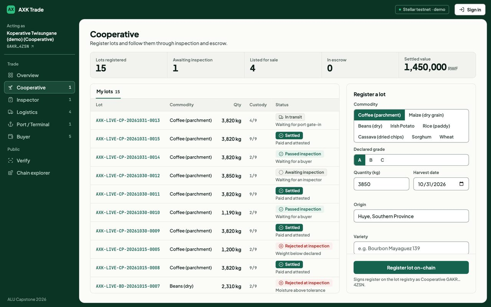
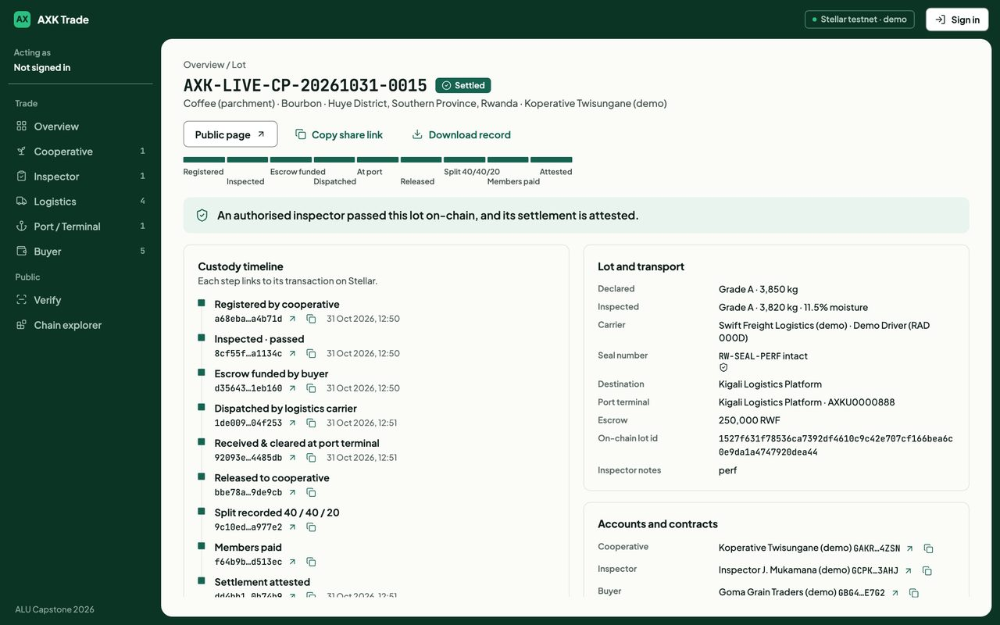
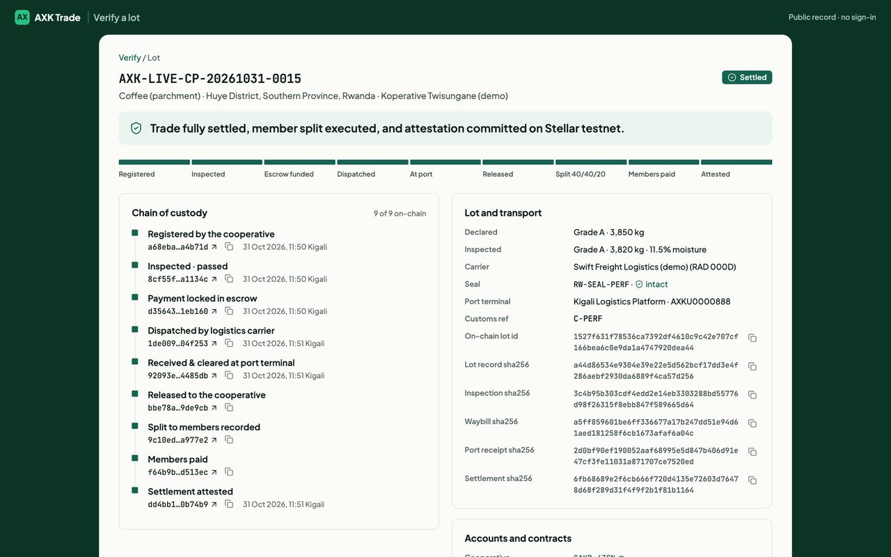

Cross-border agricultural trade around Kigali fails at two points: a buyer across the border cannot verify a lot's quality, quantity and origin, and payment is slow and hard to trust. AXK Network puts verification and settlement in one workflow. A cooperative registers a lot; an independent inspector signs it off; the buyer's payment is held in a smart-contract escrow that only accepts inspected lots and can only pay the cooperative that registered the lot; a carrier and a port record custody; on delivery the escrow releases, the payment is split between cooperative members and the whole trade is attested. Every step is a Stellar testnet transaction, and anyone can check a lot's history on a public page or by scanning its QR code, without an account.
The table maps the requirements and modules of the approved proposal (Table 1, sections 3.3 and 3.4) to the product.
| Planned feature | Intended purpose | Current status | Evidence |
|---|---|---|---|
| Create and verify commodity records (FR, Verification Module) | A distant buyer cannot verify a lot's quality, quantity and origin | Completed | contracts/lot_registry (18 tests); /trade/coop; record digest committed on-chain; Fig. 3 |
| Independent inspection | A trusted third party vouches for the lot before money moves | Completed (extended) | Write-once inspect; a cooperative cannot inspect its own lot; /trade/inspect; offline capture through ODK (odk/) |
| Initiate and track transactions (FR, Transaction Module) | Both parties see where a trade is | Completed (extended) | Nine-step timeline; state machine in ledger/workflow.py; logistics and port custody added |
| Execute and record local-currency settlement (FR, Settlement Module) | Payment is slow, costly and untrusted | Completed on testnet | RWF test token; contracts/escrow (27 tests), splitter (12), attestation (8); Fig. 2 |
| View tamper-evident verification history (FR) | Anyone can check a record without trusting a party | Completed (extended) | /trace with QR, /chain hash-chain explorer, GS1 EPCIS 2.0 export (validated against the GS1 schema) |
| Security: cryptographic integrity (NFR) | Records cannot be changed unnoticed | Completed | 14 contract guarantees, each pinned by a test (docs/security.md) |
| Performance: fast processing (NFR) | Usable in a real trade | Completed | Pages {{LAT_PAGE}} ms, API {{LAT_API}} ms median; full trade {{TX_TOTAL}} s on testnet (section 4.4) |
| User registration and authentication (FR) | Only the right people act in each role | Partial, changed | Frappe roles and an access guard (trade_api._guard, rate limit); public pages need no account by design; per-user wallets are roadmap BUY-3 |
| Mobile client, low-literacy UI (NFR) | Works on widely available phones | Partial, changed | Responsive web app tested at phone size in three browser engines (section 4.3); English only (roadmap I18N-1) |
| Reliable on low-bandwidth networks (NFR) | Rural connectivity | Partial | Screens ready in {{LOWEND_MED}} ms (median) on a simulated slow-3G, slow-CPU phone; inspections can be captured offline in ODK |
| Extensible to new corridors (NFR) | Scale beyond one corridor | Partial | Contracts are corridor-agnostic; EPCIS export; open-source roadmap with 43 items |
| Interoperate with mobile money (scope 1.6) | Members paid in local currency | Not implemented | Design note docs/design/set-3-mojaloop-payouts.md; SEP-24 anchor is roadmap SET-2 |
| Pilot with 30 to 50 users (objective 4) | Measure completion time and trust | Not yet run | Awaiting ethics approval; instruments ready: 15-item TAM questionnaire, consent form, interview guide, observation checklist |
Justification of changes. (1) Stack. The proposal suggested React, Node.js and PostgreSQL. The product uses Frappe (Python, MariaDB) because it provides role permissions, a REST layer, a database and an admin interface out of the box and matches AXK's existing platform, which left the effort for the trust-critical parts; the "distributed ledger" became Stellar Soroban for its low fees, native local-currency assets and multi-party authorisation. (2) Mobile app to responsive web. A web app needs no installation and runs in any phone browser; offline field capture is covered by ODK instead. (3) Logistics and port roles were added because the design showed a custody gap between payment and delivery. (4) No accounts for verification is deliberate: anyone can check a lot, and no personal data is shown. (5) The pilot depends on ethics approval, which is in review; all instruments are prepared.
Four layers, as in the proposal (Fig. 2 of the proposal): presentation (Frappe web pages and vanilla JavaScript,
www/, public/js/trade.js); application (REST endpoints in trade_api.py with an access
guard and a per-user rate limit, and the object-oriented ledger package); data and trust (MariaDB for
application records, four Soroban contracts for trust-critical state); external (Soroban RPC and Horizon; ODK Central;
GS1 EPCIS consumers). The browser calls /api/method/axk_capstone.trade_api.* with JSON; the server builds the
step's record, signs through stellar-cli with an argument list (never a shell string), stores the transaction hash,
and returns the updated trade. Each record (lot, inspection report, waybill, port receipt, settlement) is serialised as
canonical JSON and hashed with SHA-256; only the 64-character digest goes on-chain. Names, notes and farmer data stay
off-chain, and the public page shows statuses, digests and transaction hashes only. The browser can re-hash a record with
Web Crypto and ask the contract whether it still matches.



| Problem | Solution | Where |
|---|---|---|
| Same record must always give the same proof | Canonical JSON (sorted keys, no whitespace) then SHA-256: deterministic, linear in record size; any change to any field changes the digest | ledger/records.py |
| Pay only for inspected goods, only to the seller | The escrow makes a cross-contract call approved_cooperative(lot_id) before any transfer; the payee is read from the registry, never supplied by the caller; one live escrow per lot | contracts/escrow |
| Split payments without losing money to rounding | Integer basis points (40/40/20 of 10,000); every share but the last gets amount x bps / 10000, the last gets amount - paid, so the parts always sum to the exact amount | contracts/splitter |
| Detect a tampered event history | Hash chain: each event's hash is SHA-256(previous hash + payload + evidence). A single pass recomputes every link and flags the first broken one and everything after it | public/js/chain.js |
| Stop anyone claiming a real lot's identity | lot_id = SHA-256(cooperative address + lot reference), computed on-chain | contracts/lot_registry |
| Steps in the right order; recover from failures | State machine (TRANSITIONS); settlement saves after each of its four transactions and resumes from the first step not yet done, never repeating a payment | ledger/workflow.py |
| Detect container tampering | Gate-in compares the arriving seal with the waybill's seal before anything is attested | ledger/workflow.py |
| Interoperate with supply-chain systems | Maps each step to a GS1 EPCIS 2.0 event; deterministic UUIDv5 event IDs so re-exports de-duplicate | epcis.py |
| Strategy | Why selected | How it was conducted | Results |
|---|---|---|---|
| Unit (contracts) | Contract bugs move money and cannot be patched after deployment | Soroban test environment; one test per security guarantee and failure mode (make test-contracts) | 65 / 65 pass across 4 contracts |
| Unit (application) | Test lifecycle logic without a network | stellar-cli replaced by a fake runner that records commands (scripts/test_ledger.py); EPCIS and ODK parsers | 21 + 8 + 9 pass; digests identical to the pre-refactor code |
| Integration / end-to-end | Prove the real system, not parts | 7 scripted trades and failure modes against the server; plus a full trade on Stellar testnet with on-chain re-verification | 7 / 7 pass; testnet trade settled, all 4 records matched on-chain |
| Standards validation | Exports must be readable by other systems | EPCIS documents validated against the official GS1 JSON schema and CBV vocabularies | All documents valid |
| Compatibility | Users have different browsers and phones | Playwright: every screen in Chromium, Firefox and WebKit at phone, tablet and desktop sizes, plus a low-end profile | {{COMPAT_OK}} / {{COMPAT_LOADS}} page loads rendered with no JavaScript errors (4.3) |
| Performance | Trades must be practical; servers small | 20 timed requests per endpoint; one timed testnet trade; process memory and asset sizes | See 4.4 |
| Input | System response |
|---|---|
| Buyer tries to pay for an uninspected lot | Contract refuses (error #10, shown as "Lot has not passed inspection"); no money moves |
| Arriving seal differs from the waybill | "Tamper Alert"; nothing is attested and the lot stays In Transit |
| Rejection without a reason; quantity of 0; step out of order | Refused before signing, with a plain message |
| Cooperative inspects its own lot; second inspection | Contract refuses (errors #6, #4) |
| ODK submission from another form, moisture over 40%, XML with entities, or imported twice | Refused; duplicate detected by the submission's instance ID |
| Testnet slow or down | Step fails with "did not answer in time"; nothing is saved, no fake hash is ever recorded |
Host: {{BROWSERS}}. "Ready" is the time until the screen's own content has rendered, measured on the full stack (local server). {{VERCEL_NOTE}}
| Engine | Size | Pages OK | Median ready (ms) | Slowest (ms) | JS errors | Sideways overflow |
|---|
Local server on Apple silicon (10 cores): page {{LAT_PAGE}} ms, public trace page with QR {{LAT_TRACE}} ms, lot API {{LAT_API}} ms and EPCIS export {{LAT_EPCIS}} ms (medians of 20). A full trade on Stellar testnet took {{TX_TOTAL}} s, of which settlement (four transactions) took {{TX_SETTLE}} s; almost all of it is network confirmation, roughly 5 to 6 s per ledger. The whole stack (web, workers, Redis, MariaDB) uses about {{MEM_TOTAL}} MB of memory at rest, so it fits a 2-core, 4 GB server. The main script is {{JS_GZ}} KB compressed and the largest contract is {{WASM_MAX}} KB.
| Principle | How it is applied |
|---|---|
| Encapsulation | ContractClient hides how a contract call is built and how errors are read; callers use typed methods such as Escrow.create() or LotRegistry.inspect(). Smart contracts keep state private behind their public functions. |
| Abstraction | Abstract base classes CommandRunner (how commands run) and CanonicalRecord / AttestedRecord (what a record must provide). |
| Inheritance | LotRegistry, Escrow, Splitter, Attestation, Token extend ContractClient; LotRecord, InspectionReport, Waybill, PortReceipt, SettlementRecord extend the record base classes. |
| Polymorphism | Each record class answers attestation_key() its own way, so verification loops over records without knowing their type; each contract client has its own ERRORS table; StellarCli and the test runner are interchangeable. |
| SOLID / separation of concerns | The ledger package has no web-framework dependency (single responsibility, dependency inversion): configuration, clock, cache and saving are injected by chain.py. New contracts or record types are added by subclassing (open/closed). |
| Modularity and organisation | contracts/ (one crate per contract), frappe_app/.../ledger, trade_api.py (HTTP), verify.py (public data), epcis.py, odk.py, www/, public/, scripts/ (tests and tools), docs/. |
| Readability and maintenance | Descriptive names (a_cooperative_cannot_inspect_its_own_lot), module docstrings explaining why, a Makefile with one command per task, make check-env, contribution guide, security policy and roadmap. History of meaningful commits on GitHub. |
| Security by design | No shell strings, argument lists only; personal data never on-chain; access guard and rate limit on signing; write-once records; 14 guarantees each tested. |
Keys are held by the server for each role (custodial) and the carrier's and port's attestations are signed by the verifier on their behalf; non-custodial signing (roadmap BUY-3, LOG-4) is the next step before any real money. The system runs on testnet only; the contracts are not audited. The pilot (objective 4) starts after ethics approval, using the questionnaire and interview instruments already prepared. Mobile-money payout (SET-2, SET-3) and translation into Kinyarwanda, French and Swahili (I18N-1) are planned.